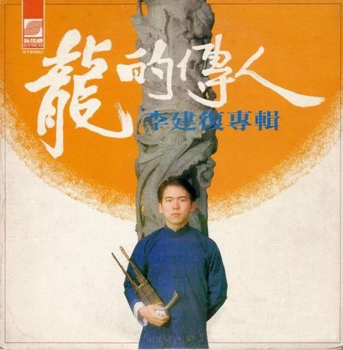
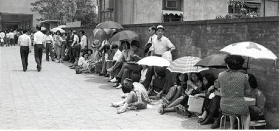
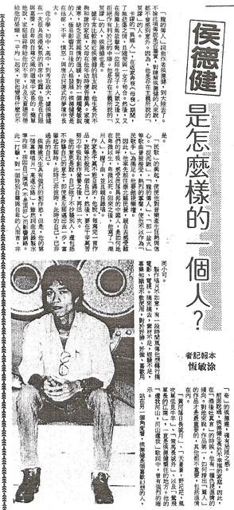
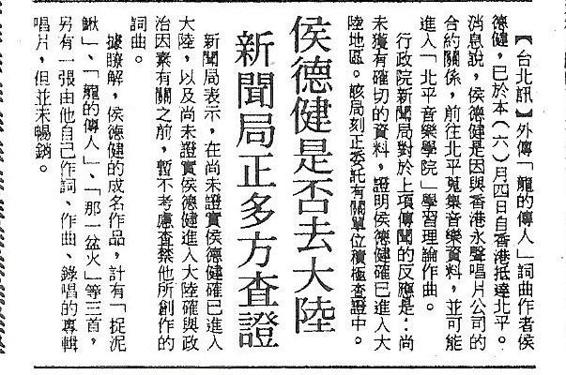
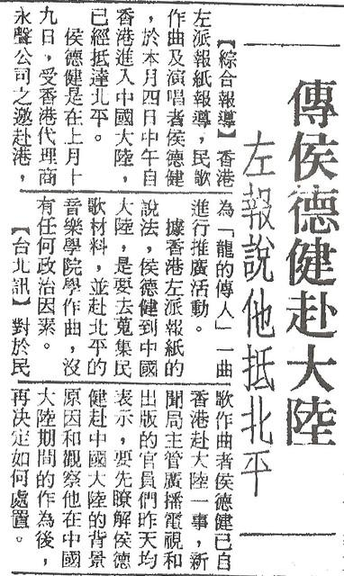
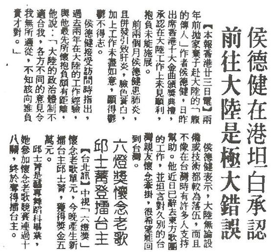

這種「無釐頭」的標題，對網路上的年輕鄉民們來說，大概都是「有看沒有懂」，所以必須先解釋一下，究竟兩蔣時代最夯的政治用語「自強」，為什麼會到了今天，反而演變成了不雅用語？這一切當然都還是要拜我們的大內高手，也就是這二十年來每次總統大選都不甘寂寞的前新聞局長所賜。
根據媒體報導，二○一一年四月在台南地方法院，公布了一個奇怪的判決。台南縣一名莊姓男子，為了報復同居人離他而去，竟將兩人所生的女兒改名為「敬自強」，導致讀小學的女兒「莊敬自強」，在學校裡被同學取笑，心靈嚴重受創。法官認為莊先生枉為人父，卻因上一代的恩怨，遷怒女兒而改了這個會讓旁人嘲笑的名字，雖然萬分不忍，依法卻不能要求莊先生將女兒名字改回來，只好先將「莊敬自強」的監護權，暫判給台南縣家扶中心，讓家扶中心握有將女童改回原本名字的權力。
人要活的老，才能理解風水輪流轉的道理；昔日黃金，今日糞土，在歷史上反而是常態。回到兩蔣時代，「自強」就跟「台生」、「建國」一樣，絕對是眷村排行榜上的「菜市仔名」。不要說什麼「男兒當自強」，連女生名叫「自強」的也大有人在。例如軍中上莒光日電視教學時，管你螢幕裡是什麼總統、總長或總司令的，前排長官們是魂遊天外，後排阿兵哥們則是呼呼大睡；但只要有人一喊：「自強來了」，大家立刻精神抖擻、目不轉睛。原來那年代華視最紅的正妹女主播就叫孫自強，靠著青春無敵，比之前的「莒光日一姊」李豔秋，更受阿兵哥歡迎，後來還嫁入台南豪門，可見得「自強」在當年絕對是跨越省籍，大家都愛的。
一九七○年代的台灣，對老蔣來說是內憂外患、風雨飄搖。一九七一年七月，美國國務卿季辛吉密訪「匪區」，並發表聯合公告說尼克森總統也將赴中國訪問；十月聯合國就通過第二五七八號的「排我納匪案」，隔年又簽訂了「美匪上海公報」，美「匪」關係正常化終於化暗為明。老蔣在羞憤無奈下，只能藉著每年元旦、青年節與國慶，不斷昭告「全國七億軍民同胞」，把「處變不驚、莊敬自強」這八字箴言，當作消災解厄的政治口號。
坦白說國民黨還真是人類歷史上少見的「超級廢物」，雖然擁有對手幾倍甚至幾十倍的資源，卻在大陸敗於共產黨，在台灣又敗於民進黨。無論是砍人頭的內戰，還是數人頭的選戰，都能被他們搞到反勝為敗、親痛仇快。你從「處變不驚、莊敬自強」這種大家都聽不懂也看不懂的政治口號，就能想見國民黨輸得還真是一點也不冤枉。口號就是要簡單易懂，升斗小民才有可能感動追隨，不然一直這樣穿著襪子洗腳，脫了褲子放屁，國不破、家不亡，未免也太沒天理了。
「處變不驚、莊敬自強」的政治口號，在台灣雖然響徹雲霄，但前一句可以說完全是廢話，你老蔣對內可以「處驚不變」，繼續在台稱王、繼續堅持戒嚴、繼續傳位長子、繼續特務橫行，但外在情勢與民心士氣卻由不得老蔣啊！在南越赤化與台美斷交後，從塔城街的美國大使館到信義路的美國在台協會門前，申請赴美簽證的排隊人龍，永遠不少於總統府前被動員來高呼「蔣總統萬歲」的行屍走肉。處變不驚就像美國瘦肉精，喊的人拚命喊，吃的人卻照樣吃。甚至像後來某些反美牛的立委那樣公開喊、私下吃，大聲喊、默默吃，街頭喊、家裡吃；兩蔣用四十年的戒嚴統治，早已把台灣人馴化成絕對的「靈肉分離」了。
。。。。。。。。。。。。。。。。。。。。

「處變不驚」沒多久就消聲匿跡了，但後面那句「莊敬自強」可就長命百歲了。台北市政府先將大安區和平東路三段到景美區軍功路之間的南二隧道，改名為莊敬隧道；後來工程難度更高、施工期間也更長，當時是全台最長的公路隧道，現在依然是全台北市最長，連接士林區故宮路與至善路，到中山區北安路通往內湖與大直的北一隧道，也改名為自強隧道。一九七○年代政壇很流行「工程馬屁學」，高速公路被改名為中山高速公路，國際機場被改名為中正國際機場；現在高速公路與國際機場，已經改回起初的編號一高與地名桃園，讓中山與中正都進了垃圾桶，但莊敬隧道與自強隧道卻依然存在。
雖然工程單位精通官場馬屁學，但施工總還是需要時間，大工程更是經年累月，所以官場馬屁學排行只能屈居第三，第二名則是郵局，因為印郵票比蓋工程輕鬆多了。現在老馬要保衛釣魚台，之前阿扁要加入聯合國，郵局要奉承這一馬一扁的小騙子，都會想到要印郵票；詐騙集團祖師爺的兩蔣父子掌權時，郵局當然更是精通此道。一九七○年代初期，台灣最通行的郵票，就是那種醜到不行，票面上只有四個大字的「莊敬自強」票；直到後來有了更醜的國旗郵票，才被取而代之。在那電子郵件尚未出現，甚至電話都還不太普及的時代，我們這些青春期的少男少女，寫信時當然是絕對拒用這種醜到離奇的「莊敬自強」票。
但郵局這馬屁高手，也不是省油的燈。為了對付我們這些懷春的小男生或小女生，乾脆直接把「莊敬自強，消滅共匪」的口號印在信封與明信片上。就算你寫情書堅持不用標準信封，郵局也要像電車痴漢那樣，用「自強」的郵戳給她這樣戳下去。到了二○○七年，郵局為了拍阿扁馬屁，每封信都蓋上「牽手護台灣，加入聯合國」的郵戳，依然是當年兩蔣的那一套馬屁學。小蔣死後，我們去郵局買集郵用的郵票，才赫然發現郵票袋上已改印「三民主義統一中國，不集中共集團郵票」，之前都還是印著「莊敬自強消滅共匪，不集匪共集團郵票」，但在我們當年這些集郵的小孩看來，郵局才是貨真價實的「匪共集團」。
不過在官場馬屁學裡，永遠是「沒有最下流，只有更下流」，所以處變不驚比不上莊敬自強，莊敬自強裡的莊敬又比不過自強。把「自強」兩字用到博大精深、無所不在的單位，當然還是軍方。一九七八年底美「匪」建交後，小蔣就搞了個「自強救國基金專戶」，委託台銀及郵局代收捐款。空軍拔得頭籌，一九七九年就將剛向老美買來的十八架F-5E戰機，組成了空軍「自強中隊」。海軍一看苗頭不對，一九八○年也將委託中船建造的八艘飛彈快艇，組成了海軍「自強中隊」。空軍與海軍都搶著在當年國慶日，向小蔣呈獻「自強中隊」，果然嚇壞了還在沉睡的陸軍，隔年一月也趕緊將M四八A三戰車，組成了「自強中隊」，讓陸海空三軍都有了「自強中隊」。
雖然三軍各自發動向小蔣呈獻「自強中隊」，明明是空軍最先提出的，但成軍最早的卻是海軍，原因就是飛彈快艇是自製的，早已驗收完畢；但空軍從購機到驗收卻還需要時間，因而讓海軍後來居上；還好空軍未雨綢繆，早已將AT-3教練機命名為「自強號」，在這場「三軍搶自強」的運動中，總算也搶到了另類第一。無奈風光一時的「自強號」，好不容易試飛成功，又改裝成攻擊機而要量產時，情勢又逆轉了。空軍向老美採購的F-5戰機已交機二百多架，向歐洲又買到將近兩個聯隊數量的F-104二手戰機，「自強號」從此被打入冷宮。幸好飛機的「自強號」被人淡忘了，火車的「自強號」卻異軍突起，而且存留至今、
一九七八年八月，台鐵在西部縱貫線全面電氣化後，原本行駛於縱貫線台北至台中間的最高級客車，英國製的「電特快」（EMU100）已經向北延至基隆，向南延至嘉義、台南到高雄。台鐵為了替新客車命名，用預定的人權號、中正號、反攻號、四維號、自由號、自強號、東海號、知恥號、神州號、勝利號、復神號、無敵號、踏實號、總統號、禮義號（按筆劃排列）等四十多個名字，委託中華民國民意測驗協會隨機訪問旅客，挑出了前三名的自強號、勝利號及自由號呈報給省政府，省主席謝東閔裁定為自強號，成為一九七○年代台灣全民「自強活動」裡，至今猶存的少數遺跡。
。。。。。。。。。。。。。。。。。。。。其實從中國近代史來看，「自強」也是一個很不吉利的用語，難怪當年兩蔣父子身邊的許多「國師」都力諫，晚清曾國藩與李鴻章等大臣搞了「自強運動」，讓朝廷日後先被日本打敗，後有八國聯軍，最終還被亂黨革了命；如今神州蒙塵、聖上避狩，豈能再用這個「自強」的亡國之兆？但顯然小蔣聖哲天縱、一意孤行，一九七○年代初期，「莊敬自強」就像對岸的文革那樣，已經一發不可收拾。一九七五年老蔣駕崩，小蔣守喪三年、墨絰從公，沒想到剛登基半年，老美就送了個「大禮」。一九七八年十二月十六日老美宣布，自一九七九年一月一日起，美「匪」正式建交，至於台美之間的協防條約，則按條約內文在一年後失效，也就是說自一九八○年一月一日起，駐防台灣已三十年的美軍將全部撤出。
由於之前美軍撤出南越不到兩年，北越就完成了統一大業。南越赤化後整個南中國海，數十萬漂流在海上的船民，成了亞洲各國政府的夢魘；高棉波帕政權的大屠殺，更是嚇壞了台灣人民。小蔣為了安定人心，就將台灣被聯合國逐出時，老蔣搞出來的「莊敬自強」冷飯新炒，而且還擴大規模成了「迎接自強年」。也就是說，自一九八○年一月一日美軍完全撤出台灣起，就是「自強年」的開始。之前台灣當老美的看門狗，主人還要餵點飼料；但從這一刻起，喪家之犬依舊要看門，但想吃什麼就自己想辦法了，這就叫「自強」。
現在年輕人大概很難理解「自強年」要做些什麼？其實最重要的就是元旦清晨的升旗典禮，就像現在流行的跨年倒數計時狂歡活動。國民政府從還在大陸時就大力推行陽曆，可惜效果始終不彰。不過到了台美斷交時，台灣已從農業社會完全跨入工業社會了。都市居民與年輕學子，除了春節、端午與中秋這三個按農曆放假的民俗節日，生活中早已完全使用陽曆。藉著「迎接自強年」的口號，政府規定元旦這一天的清晨六點，台北市的學生要在到總統府前參加升旗典禮，其他各縣市政府甚至鄉鎮公所前，也都有類似的升旗活動。
既然一九八○年「自強年」，那麼從一九八一年起，應該就不會再是「自強年」了吧？抱歉！不是這樣。雖然大家都知道宋楚瑜與劉家昌幾十年來勢如水火，不過宋楚瑜對劉家昌的的長處，向來卻是「不吝偷學」的。原來劉家昌創作了一首電影主題歌《民國六十六年》，歌詞最後說：「從民國六十六年起，每個人更要努力，縱然身處國難裡，爭氣讓外人看得起。」這首歌在六十六年，當然是風行一時的愛國歌曲，可是到了六十七年，只要把「六十六」改成「六十七」，這樣唱到民國六百萬年，依然可以「絃歌不輟」，反正我們永遠「身處國難裡」，所以可以永遠戒嚴。「自強年」也是這樣，那些馬屁官怎麼會輕易放過學生？因此從一九八一年起，台灣就進入了「年年都是自強年」的新里程。
。。。。。。。。。。。。。。。。。。。。

「自強年」除了年年行禮如儀的抓學生去衙門前跨年升旗，其他的演講、徵文、路跑與印郵票等馬屁活動，跟阿扁的「入聯」與老馬的「保釣」大同小異；唯一比較不同的就是為了抗議美「匪」建交與推廣「愛鄉更愛國」，電視上又出現了一大堆愛國歌曲。本來自一九七○年代初期，小蔣就任行政院長後，對於三家電視台的戲劇與綜藝節目就很不滿。但電視台也很為難，在收視率與廣告的壓力下，也不能完全跟觀眾「唱反調」。只好安排一些名不見經傳的小歌星，在節目裡唱些新聞局規定要唱的淨化歌曲與愛國歌曲，把官方規定的比率唱夠了就好；至於大牌明星或是唱片公司要打歌，為了收視率與廣告，就根本不理新聞局了。
但美「匪」建交由於老美宣布得太突然，台灣民間的反應也很兩極，有辦法的人搶著去排隊等移民，沒辦法的就像《孟子》說的：「貧賤不能移」（民），因此在島內激盪出了愛國與反美的複雜情緒，對唱片公司與電視台來說，竟成了一大商機。從前電視台要請大牌歌星連在節目裡唱愛國歌曲都很難，更何況是出愛國歌曲的唱片；但現在情勢逆轉了，連鳳飛飛也開始唱起《我是中國人》、費玉清唱起《中華民國頌》、張帝唱起《國家》、陳芬蘭唱起《莫待失敗徒感慨》、吳秀珠（小野貓）唱起《躍馬中原》、江音唱起《海棠血淚》、陳淑樺唱起《自由女神哭泣了》，所有在過去與未來都不可能唱愛國歌曲的大「咖」，這時全都下海了。真的是除非不算「咖」，否則必愛國。
不過流行音樂的市場，真的也是瞬息萬變。當「自強年」的風潮一過，台海局勢並未因斷交、廢約與撤軍而受太大影響，我們這些「貧賤不能移」的小老百姓們，生活又回到常軌，電視節目裡的桑間濮上、靡靡之音自然都班師回朝，風行一時的愛國歌曲也就暴起暴落，重回幾年前淨化歌曲大家「不唱、不播、不聽」的「三不」窘境。能夠歷經時代考驗的愛國歌曲只有兩首，而且原因都只有一個，就是回到了歌詞所強調的「中國」，因而貨歸原主、鹹魚翻身。其中一首是《中華民國頌》，回中國後被改名為《中華民族頌》；至於另一首就更有名了，那就是《龍的傳人》。
《龍的傳人》與《中華民國頌》這兩首歌，可說是一九七○年代台灣愛「中」國歌曲的代表作，歌詞裡對國家與民族的愛，簡直是比瓊瑤筆下的愛情更夢幻。《龍的傳人》一開始就去鬼扯什麼長江黃河的，好像戒嚴時代出生的台灣小孩，沒見過壯闊的大江大河，若是不去神遊夢想，何以能「愛（中）國」？還好解嚴之後，我接待過上百位來台訪問的中國學者，也在網上結交了數百位的中國鄉民，見過《中華民族頌》裡一眼看不完「青海的草原」者，至今尚未超過十個；至於見過峰峰相連到天際的「希瑪拉雅山」者，更是一個也沒有。
為什麼在兩蔣時代，台灣小孩「愛（中）國」就要像成語說的「葉公好龍」一樣，只能愛那些虛幻的歷史地理，卻不能愛那些語言相通，可以相談甚歡的人們？就像現在大陸的糞青，不能光明正大的說自己愛中國，只能拐彎抹腳的愛祖國那樣。兩蔣要台灣小孩去愛中國，只是要鞏固他自己的權力基礎；一旦有台灣小孩長大了，想要跳過老蔣的統治，不再去愛什麼看不到的國家民族、大山大海、甚至是堯舜禹湯文武周公，直接去愛對岸的人民，那就麻煩大了。
。。。。。。。。。。。。。。。。。。。。

一九七○年代末期台美斷交前，台灣流行樂壇有三大主流，第一是美軍與其眷屬所帶來的西洋流行歌曲，主要流通在美軍俱樂部與一些盜版的唱片行；第二是國語流行歌曲，尤其是瓊瑤式三廳電影的主題曲或插曲，主要流通在電視裡綜藝節目與夜市的盜版錄音帶攤販；由於大學生們基於階級眼光，常戲謔是「理工學院聽的」，就是理髮小姐與女工們聽的。很多大學生自以為是，用吉他配樂，配合救國團的自強活動，慢慢發展出第三條路線，也就是所謂的校園民歌。當然不到幾年後，校園民歌被主流唱片業吸收，在電視節目裡狂播猛送，對校園民歌的推廣固然大有助益，也造就了日後許多的歌壇巨星與唱片製作人，但與國語流行歌曲漸漸合流後，民歌也就不再是民歌了。
在美「匪」建交後，電視上所出現的愛國歌曲與演唱者，幾乎全是第二路線，也就是國語流行歌曲；唯一例外的，應該就是這首《龍的傳人》了。這首歌的詞曲作者侯德健，祖籍重慶，一九五六年生於高雄眷村，自幼父母離異，家境不裕。據他自稱，老美宣布美「匪」建交的當天上午，就讀於政大中文系的他，已經先從調頻收音機的美軍電台裡聽到了，但台灣的電子與平面媒體在特務管制下，還不敢輕舉妄動的發布新聞。他在義憤填膺下只花半小時，就寫下了《龍的傳人》，這也可說是他一生中重要的音樂代表作。另外在校園民歌時期，他還曾寫過膾炙人口的《捉泥鰍》、《那一盆火》與《歸去來兮》等作品，都由專出校園民歌《金韻獎》的新格唱片公司出版，成為包美聖與李健復的專輯主打歌。
《龍的傳人》雖然號稱是愛國歌曲，又在美「匪」建交時製作發行，應該是符合當時的政策吧？但結果卻不然，因為侯德健的歌詞裡，原來寫的是「槍炮聲敲碎了寧靜夜，四面楚歌是洋人的劍。」這一點太敏感了，一來美軍是要在一年後才會完全撤離台灣，特務深恐侯德健所寫的這個「洋人」，會惹來本地民眾更激烈的反美行動。二來侯德健自稱幼年就深受外祖父羅秉謙的影響，是個堅定的民族主義者。據說羅秉謙曾是空軍飛行員，內戰時奉令轟炸延安，他卻把炸彈全丟延安以外的秦嶺。戒嚴時代歌星出唱片與上電視，都有鷹犬層層把關。因此《龍的傳人》雖被新格唱片公司看好，《聯合報》也刊出了歌詞全文，但送新聞局審查時，仍是一波三折
為了爭取商機，新格唱片同意新聞局的修改，將這句「洋人的劍」改成了那年代最正確的政治說法「姑息的劍」。兩蔣時代所謂的「姑息」，就是要將所有大陸赤化、退出聯合國與外交挫折等等歷史功過，全歸咎於「國際姑息主義逆流」，也就是一切責任都與老蔣無關。但大家不解的是「姑息」若是指老美對老共妥協，又怎能成為「姑息的劍」？但這不重要，反正官字兩個口，上面的口是在放狗屁，下面的口是狗放屁，合起來就是一隻放屁狗，狗官要怎麼改就怎麼改，小老百姓根本無可奈何。侯德健的另一首歌《捉泥鰍》，裡面有句「小毛的哥哥帶著他抓泥鰍」，不也是被狗官認為小毛是指毛澤東，於是小毛就被狗官改成了現在大家所唱的小牛，對付這種狗官審歌的鬧劇，唱片公司早已駕輕就熟了。
唱片公司擔心還有其他特務質疑，歌詞裡說「古老的東方有一條龍，它的名字就叫中國，古老的東方有一群人，他們全是龍的傳人。」中國若是「它」，龍的傳人又是「他們」；那「我」就等於是台灣，這樣不就是分離主義嗎？可是如果歌詞被狗官這樣一改再改，最後就算順利出版，整首歌也都變了調。於是趕緊請出門神，就是當時教育部次長的兒子，以進行曲的方式來主唱這首愛國歌曲，果然鷹犬暫時閉口，發行後也立刻風行一時，成為那年代與《梅花》同樣地位的台灣替代版國歌。
。。。。。。。。。。。。。。。。。。。。

《龍的傳人》雖然順利的取得鷹犬放行，但遭遇卻跟之前的《梅花》差不多，紅了之後也引來大官垂涎，非要拿來「自強」一下不可。一九七七年七月，那位全台灣只有他能唱《哥哥爸爸真偉大》的八王爺，不滿《梅花》的曲調太過柔弱，與「愛國歌曲」名實不符，就把它改編成了另一首「梅花進行曲」。不過這位王爺雖然霸道，卻也還有點自知之明，了解自己在音樂上的素養有限，特別請了音樂家鄧昌國修訂後，才敢拿出來「獻醜」。相形之下，無恥又無知的大內高手，膽子之大就讓人更難以想像了。
一九八○年八月四日（星期一），那年代每逢寒暑假，大專男生都要去台中成功嶺受訓。軍方將領為了拍大內高手的馬屁，除了請八王爺來講冷笑話、唱梅花，還把少年得志的他請來，對著上萬名的受訓學生演講，講題就叫「龍的傳人」。當然，大官放的屁都差不多，受訓學生也不太當一回事。不料這一天大內高手不知是吃了什麼快樂丸，表現得比八王爺還要「駭」，人家八王爺是改《梅花》的曲調，改完後成了另一首歌，這樣春風一度後還放姑娘一條生路，總算也是盜亦有道；但大內高手的本領就更高了，乾脆直接替《龍的傳人》改詞，先姦後殺、一氣呵成，讓小老百姓見識到了傳說中東廠裡的無相神功。
原本《龍的傳人》歌詞是：「百年前寧靜的一個夜，巨變前夕的深夜裡，槍炮聲敲碎了寧靜夜，四面楚歌是姑息的劍。多少年炮聲仍隆隆，多少年又是多少年，巨龍巨龍你擦亮眼，永永遠遠地擦亮眼。巨龍巨龍你擦亮眼，永永遠遠地擦亮眼。」我們的大內高手，為了要推廣「自強年」，就把歌詞拿來「自強」了一下，改成：「百年來屈辱的一場夢，巨龍酣睡在深夜裡。自強鐘敲醒了民族魂，臥薪嘗膽是雪恥的劍。爭一時也要爭千秋，挑重擔才是龍的傳人。巨龍巨龍你快夢醒，永永遠遠是東方的龍；傳人傳人你快長大，永永遠遠是龍的傳人。」
《龍的傳人》八月四日早上在成功嶺，被大內高手「自強」了之後，次日《聯合報》的「聯合副刊」，就刊載了大內高手的演講全文。並在東廠內召來了《龍的傳人》詞曲作者侯德健及主唱人李建復，與副廠長戴瑞明、敵情研究室主任唐盼盼、《音樂音響雜誌》發行人張繼高、新象藝術中心負責人許博允、劇作家張永祥、政大教授金神保，大家一起來「討論」新詞，主唱人李建復還被要求即席演唱了一遍被大內高手「自強」了之後的《龍的傳人》。那麼原作詞者的反應如何？當時媒體沒報導，但四年後真相就揭曉了。
。。。。。。。。。。。。。。。。。。。。

一九八三年十月，我在金門服役時，駐守的砲陣地離北海岸不遠，解放軍對金門的廣播，風向剛好時就會聽得很清楚。有一天我跟一個早我一年入伍的上兵一起站衛兵，剛好聽到對岸在播放《龍的傳人》，由於站衛兵也很無聊，我就隨口問學長說：「本來這首《龍的傳人》都是我們這裡天天在播的愛國歌曲，你知道為什麼現在會變成對面向我們這裡播呢？」學長的回答讓我爆笑到難忘，因為他說：「我當然知道，輔導長說是我們的蛙人部隊成功登陸匪區，佔領了匪軍的廣播站，所以共軍那裡才會播我們的歌。」
其實《龍的傳人》為什麼會從台灣這裡的「愛國歌曲」，反過來變成對岸敵軍像我們廣播的「統戰歌曲」，關鍵當然還是這首歌的作者侯德健。一九八三年六月四日，北京的中國新聞社發布消息：「來自台灣省的校園歌曲作曲者侯德健已抵達北京」。原來侯德健雖然在音樂界已所向無敵，全年度前三名最暢銷的唱片裡，他的作品就佔了兩張，還跨足電影配樂。但在一九八三年五月十九日，他好不容易拿到老大哥核發的出境許可，應香港永聲唱片公司之邀，赴港宣傳《龍的傳人》時，竟然拋妻棄子、「叛逃」進入廣州。由於《龍的傳人》與《梅花》幾乎已是台灣的「代國歌」，侯德健的身分很敏感，鷹犬們不敢張揚，只好一直壓住這則新聞，直到侯德健到了北京，對岸主動發出「回歸祖國」的新聞後，台灣這邊才偷偷的禁唱《龍的傳人》；但金門這裡由於軍方封鎖的更嚴密，所以阿兵哥根本不知侯德建已經叛逃。
侯德健的「附匪」，不但讓台灣的電視圈與唱片業雞飛狗跳，連電影圈也受到牽連。原來當時香港新藝城電影公司剛創立，首次在台灣拍攝大型歌舞片《酒矸倘賣嘸》，這部電影的劇情推陳方式，與後來的《海角七號》很類似，就是描述一個拾荒的退伍老兵（孫越飾），收養了一個棄嬰，小女孩長大後成了歌星的芭樂劇。在台灣每個行業，都有這一行自己叫賣的方式，例如賣冰淇淋的按喇叭、賣麵茶的鳴氣笛；所以就算是台灣人賣饅頭，也要用山東腔叫賣「饅頭、花捲、豆沙包」；相反的山東人收破爛，則是要用台語喊「酒矸倘賣嘸」（就是「有酒瓶要賣嗎？」）這部電影特別請了侯德健作詞作曲，主題曲《酒矸倘賣嘸》請蘇芮演唱，這張唱片可說是賣翻了，連其他插曲《一樣的月光》與《請跟我來》也都風行一時。
不料電影將上映前，侯德建卻叛逃了，《龍的傳人》唱片已出版多年，就算被禁也不會有大大損失；但《酒矸倘賣嘸》唱片剛要發、電影剛要上，就碰上了這天大的麻煩，唱片公司與電影公司大概都要關門大吉了。幸好那時黨外雜誌在報導此事時，又把侯德健出走的原因，牽連到當年大內高手「自強」了《龍的傳人》那段往事，東廠閹宦頭子顧及層峰觀感，為了自己的仕途，也只能大事化小、低調處理這次的「叛逃」，只說侯德健是「想去北平搜集民歌資料，並到北平音樂學院學習理論作曲，絕無政治因素。」新藝城公司只要把片名改為《搭錯車》，飛碟公司也把唱片主打歌改成《一樣的月光》，還是得以發行並大賣，但從此侯德健與《龍的傳人》，就這樣在台灣「人間蒸發」了。
到底侯德健當年為什麼要拋妻棄子、叛逃附匪？由於牽扯到大內高手的「自強」事件，東廠的角色因此變得很尷尬，只好「忍辱負重」，低調應付。一九八五年三月二十四日，《聯合報》十二版甚至還在香港，專訪叛逃了兩年的侯德健，說他「在港坦白承認，前往大陸是極大錯誤」，又說他「患肺炎且病發引致肝炎，臉色蒼白」，還說他「很希望回到台灣」。結果四年之後，侯德健果然又偷渡回台，不過這時台灣已經解嚴，小蔣也駕崩了，幾年前才如火如荼的什麼「自強年」與《龍的傳人》，早被新主子阿輝與善忘的台灣人，丟進了歷史垃圾桶。只有我這個當年的金門菜鳥，還記得那個笑話：「我們的蛙人部隊成功登陸匪區，佔領了匪軍的廣播站，所以共軍那裡才會播我們的歌。」
文章定位：